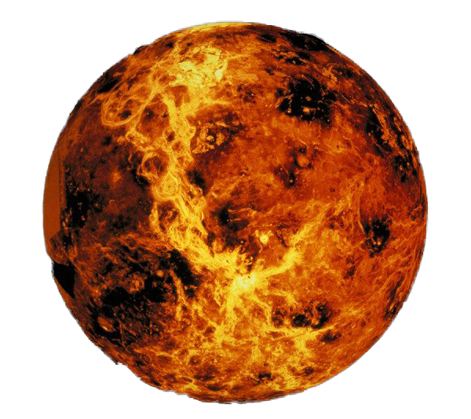
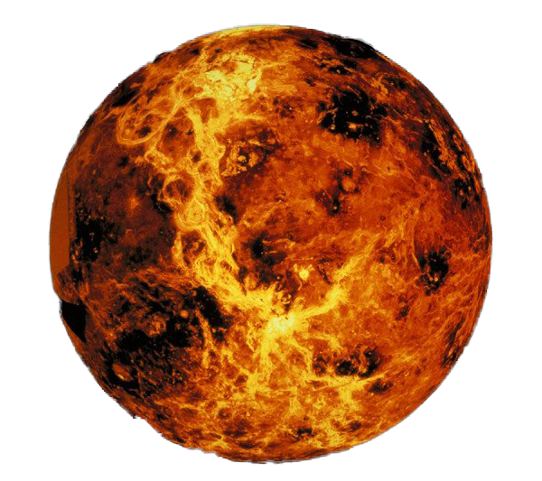

Venus Planet
This is Venus, a real hell on earth, literally.
This planet is known to be the hottest planet
in our solar system. The average temperature on
this planet is 864 degrees fahrenheit. The reason
this planet is hotter than mercury is because of its
thick, dense cloud layer. Earth and Venus are very
similar in size and mass, but the real difference lies
in their atmosphere. The atmosphere on this planet is
made up of mostly carbon dioxide with some traces of nitrogen
Venus has a very small tilt compared to earth. Here on Earth, the tilt is what gives us seasons, but on venus, there are literally no seasons at all. In other words, the planet has consistent temperatures all year round. The atmosphere in Venus is known to be toxic to any known lifeforms on earth. Even though it may be unlikely that this planet may host life. Some scientists believe that there may be microbes that could exist high in the clouds where it's supposedly cooler.
Venus has a very small tilt compared to earth. Here on Earth, the tilt is what gives us seasons, but on venus, there are literally no seasons at all. In other words, the planet has consistent temperatures all year round. The atmosphere in Venus is known to be toxic to any known lifeforms on earth. Even though it may be unlikely that this planet may host life. Some scientists believe that there may be microbes that could exist high in the clouds where it's supposedly cooler.
The name Venus was named after one of the Roman Gods, more specifically,
the Roman Goddess of Love. The planet's symbol is the symbol for womanhood
and love. This planet is especially bright on Earths sky because the clouds on
Venus do a much better job at reflecting light.
The core on Venus is a bit difficult to study because the entire
planet is shrouded in a very thick atmosphere. So our telescopes
can only see so much from down here on Earth. However, scientists
have made steady progress in understanding the core of this planet.
It is believed that the planet has a iron core that is similar to
Earth's. The core is enveloped by a hot-rock mantle and has a very
thin crust that surrounds the entire planet.
CITATIONS:
Tillman, Nola Taylor, "How Hot is Venus", Space.com, november 16, 2012, Space.com
NASA, "Solar System Exploration: Venus", NASA.gov, February 10, 2022, NASA.gov
Cain, Fraser, "How did Venus get its Name?", UniverseToday.com, May 14, 2008, UniverseToday.com
CITATIONS:
Tillman, Nola Taylor, "How Hot is Venus", Space.com, november 16, 2012, Space.com
NASA, "Solar System Exploration: Venus", NASA.gov, February 10, 2022, NASA.gov
Cain, Fraser, "How did Venus get its Name?", UniverseToday.com, May 14, 2008, UniverseToday.com

Venus Core
 
